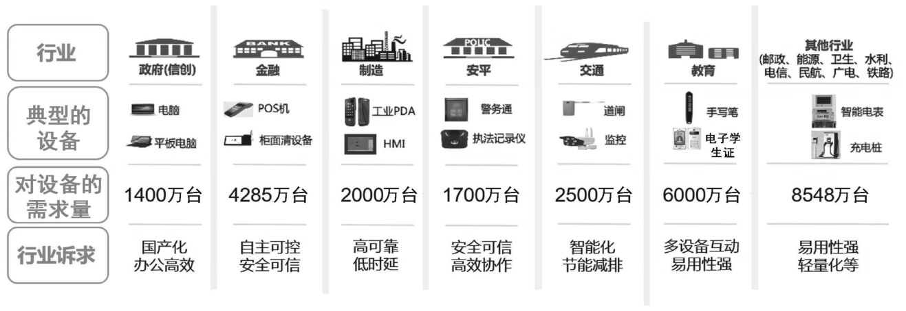
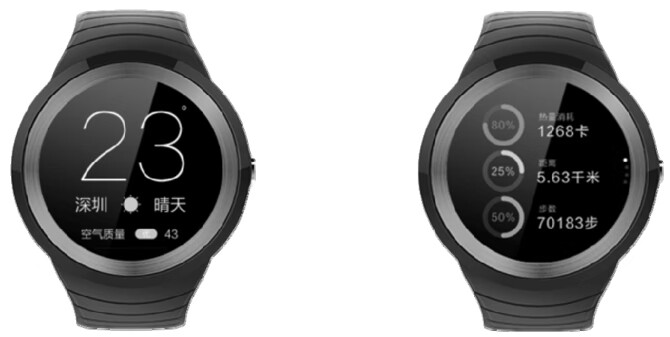
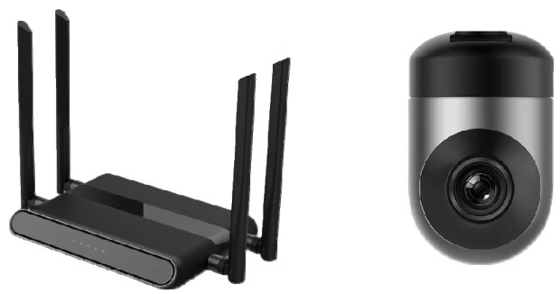
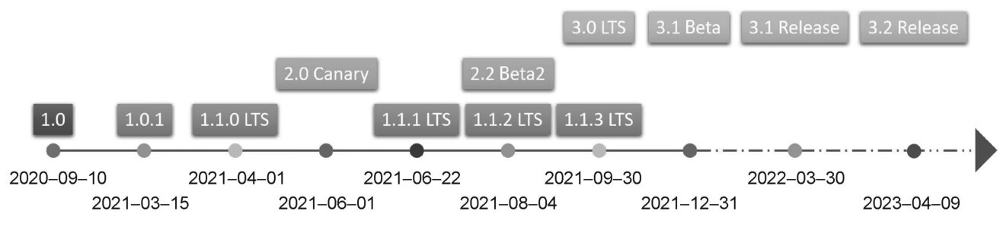

首页 > 编程笔记
OpenHarmony介绍（非常详细）
OpenHarmony 是一个完整的操作系统，在现阶段（截至 2023 年 4 月）我们可以使用 OpenHarmony 开发轻量设备、复杂的富媒体设备，也可以只开发 OpenHarmony 的上层应用（类似于安卓平板电脑/安卓手机 App 开发）。
OpenHarmony 开源项目是由开放原子开源基金会孵化及运营的开源项目，由开放原子开源基金会 OpenHarmony 项目群工作委员会负责运作。
开源最初是作为一种软件开发方式为人们所熟悉的。
开源即开放源代码，基于开源许可证（明确了他人对开放源代码的权利和义务）的要求，允许他人使用、拷贝、修改及重新发布源代码，也就是允许他人在开放源代码的基础上进行创新和完善。
随着这种开发方式的普及，人们逐渐意识到开源具有“开放、平等、共享、协作、贡献、合规”等价值取向和重要特征。这使其作为一种文化日益受到推崇。
在开源的协作过程中，随着开源贡献者规模的扩大，知识、智慧、技术、成果得到了广泛地分享与叠加，使得开源成为一种先进的、大规模智力协同的创新协作模式。这种模式正在通过汇聚创新资源、构建信任环境，加速创新要素高效流动，不断创造出更大的价值。这种模式已经从软件开发延伸到更多的领域，能够为更多行业的创新发展赋能，为数字经济发展提供动力。
当代码成为新的生产力时，开源就代表了生产关系的优化升级。“个体、集中、封闭”转向了“众研、众创、众用”，从而实现了能力复用，加快了技术迭代，推动了产业升级。
在战略性新兴信息技术产业领域，以开源模式“打造生态、构建事实标准”已经成为行业共识。
开源模式的经济价值和社会价值越来越被重视。随着《中华人民共和国国民经济和社会发展第十四个五年规划和2035年远景目标纲要》（“十四五”规划）的发布，我国开源政策的顶层设计正式启动，“开源”首次被写入国家五年发展规划。围绕“十四五”规划，多部委、多地方、多行业密集出台了开源促进政策。我国开源事业的发展、开源体系的构建、开源生态的培育得到了自上而下的政策保障。
在 OpenHarmony 的概念中，出现了一个重要的机构名称，那就是开放原子开源基金会（OpenAtom Foundation）。
开放原子开源基金会是一个致力于推动国产开源事业发展的非营利机构，是由华为、阿里巴巴、百度、腾讯等多家龙头企业联合发起的，于 2020 年 6 月注册成立的国内首家开源基金会。
像国产芯片、操作系统、数据库和工业软件等“卡脖子”领域，已经得到了国家和业界的充分重视。尤其是芯片和操作系统的研发与生产，事实上已经上升到了国家战略的高度。
OpenHarmony 还是首个面向跨设备的操作系统，不但支持消费级的产品，而且支持工业级的产品。
OpenHarmony 的市场规模预测如图1所示。
这里总结了多个行业，我们挑选其中的一部分展开介绍。
比如，在金融行业中，典型的设备有 POS 机、柜面清设备等。金融行业对设备的需求量能够达到 4285 万台左右。当然，我们都知道，金融行业的诉求是非常明确的。首先，必须要自主可控；其次，要做到安全可信。
再如，在教育行业中，手写笔、电子学生证、教学大屏等都是典型的设备。这个行业对设备的需求量能够达到 6000 万台，这是一个很庞大的体量。教育行业的诉求是，要具备多设备互动能力，而且要具备很好的易用性。
请记住，有需求就会有市场，有市场就会有机会，并且机会从来都是留给有准备的人。在风口上翱翔的是那些有准备的“牛”。
首先，什么叫南向开发呢？南向开发指的是软硬件结合的智能终端设备开发，也就是我们通常所说的嵌入式开发。
在一般情况下，南向开发会使用C语言或 C++ 语言，它注重的是硬件操作和能力封装。比如：
北向开发在通常情况下指的是纯软件的应用开发。当然，我们也可以简单地将其理解为 App 开发。在一般情况下，北向开发会用到 Java、JavaScript、TypeScript、eTS 等语言，它注重的是业务逻辑。
北向开发的目标是实现应用的功能，从而满足客户的需求，这是南向开发和北向开发的主要区别。
其实，有一个很好记的口诀，就是“上北下南”。上层开发属于北向开发，下层开发属于南向开发，这就叫“上北下南”。怎么样，是不是很容易就记住了？
于是，OpenHarmony 就形成了不同类型的系统。在入门阶段，第一时间搞清楚 OpenHarmony 的系统类型是很重要的，这与您去星巴克买咖啡要分清楚“中杯、大杯、超大杯”是一个道理。
目前，OpenHarmony 分为轻量系统、小型系统和标准系统三种类型。
我们都知道，这类处理器的硬件资源是极其有限的。OpenHarmony 的轻量系统被打造得“身轻如燕”，支持的设备的最小内存可以低至 128KB，同时可以做到提供多种轻量级的网络协议、轻量级的图形框架和丰富的 IoT（Internet of Things，物联网）总线读写部件等。
仅凭 128KB 的内存就可以做这么多事情，可谓是“麻雀虽小，五脏俱全”。
轻量系统面向的产品其实很丰富，比如智能家居领域的连接类模组、传感器类的设备，以及穿戴类的设备等。
在这三种类型的系统中，轻量系统相对简单易学、硬件成本相对较低，是入门 OpenHarmony 的首选系统类型。典型的轻量系统产品如图2所示。
在轻量系统的基础上，小型系统可以提供更好的安全能力、标准的图形框架和视频编解码能力等。
小型系统面向的产品主要是智能家居领域的 IP Camera、电子猫眼、路由器，以及智慧出行领域的行车记录仪等。典型的小型系统产品如图3所示。
标准系统在小型系统的基础上可以提供更强的交互能力、3D 的 GPU（Graphics Processing Unit，图形处理器）加速和硬件合成能力等，还提供了更多的控件，以及动效更丰富的图形能力和完整的应用框架。
标准系统面向的产品包括高端冰箱的显示屏、汽车的中控屏等，如图4所示。
图4：典型的标准系统产品
截至 2023 年 4 月 9 日，OpenHarmony 一共发布了三个主版本，分别是第一版（1.x）、第二版（2.x）和第三版（3.x）。OpenHarmony 的版本演进如图5所示。
从 2020 年 9 月 10 日 OpenHarmony 发布1.0版开始，到 2021 年 3 月 15 日发布 1.0.1 版，历时半年左右。
接下来，它就进入了一个密集的版本更替状态。我们可以看到：
到了 2021 年 8 月 4 日，请注意，OpenHarmony 开始“双线作战”了，1.1.2 LTS 版发布，同时 2.2 Beta2 版也发布了。
9 月 30 日，OpenHarmony 发布了 1.1.3 LTS 版和 3.0 LTS 版，这两个版本也就是我们俗称的“930”版本。
12 月 31 日，OpenHarmony 又发布了 3.1 Beta 版。
2022 年 3 月 30 日，3.1 Release（正式）版发布（2022 的 1 月 1 日到 2022 年 3 月 29 日期间发布的 3 个版本在图中未列出）。
2023年 3 月 30 日，3.2 Release 版发布（2022 年 3 月 31 日到 2023 年 4 月 8 日期间发布的 17 个版本在图中未列出）。
所以，我们可以看到，OpenHarmony 的版本目前快速迭代。
首先，从版本状态来看，可以得出以下几个结论：
基于版本状态，我们给出3个候选版本：
其次，从代码仓的容量来看：
最后，我们再分析一下候选版本对 HDF 的支持度。
很明显，HDF 是 OpenHarmony 控制硬件的趋势。但是，截至 2023 年 4 月 9 日，轻量系统的驱动框架还没有采用 HDF，期待未来的新版本会做 HDF 驱动框架的适配。
简而言之，HDF 虽好，但是目前轻量系统还用不上。
基于以上的分析，在学习轻量系统的时候，笔者推荐的版本是 1.1.3 LTS 版。理由如下：
OpenHarmony 官网：https://www.openharmony.cn/
1. OpenHarmony 是什么
OpenHarmony 是由华为公司捐赠智能终端操作系统基础能力相关代码，由全球开发者共建的开源分布式操作系统，具备面向全场景、分布式等特点，是一款“全（全领域）、新（新一代）、开（开源）、放（开放）”的操作系统。OpenHarmony 开源项目是由开放原子开源基金会孵化及运营的开源项目，由开放原子开源基金会 OpenHarmony 项目群工作委员会负责运作。
开源最初是作为一种软件开发方式为人们所熟悉的。
开源即开放源代码，基于开源许可证（明确了他人对开放源代码的权利和义务）的要求，允许他人使用、拷贝、修改及重新发布源代码，也就是允许他人在开放源代码的基础上进行创新和完善。
随着这种开发方式的普及，人们逐渐意识到开源具有“开放、平等、共享、协作、贡献、合规”等价值取向和重要特征。这使其作为一种文化日益受到推崇。
在开源的协作过程中，随着开源贡献者规模的扩大，知识、智慧、技术、成果得到了广泛地分享与叠加，使得开源成为一种先进的、大规模智力协同的创新协作模式。这种模式正在通过汇聚创新资源、构建信任环境，加速创新要素高效流动，不断创造出更大的价值。这种模式已经从软件开发延伸到更多的领域，能够为更多行业的创新发展赋能，为数字经济发展提供动力。
当代码成为新的生产力时，开源就代表了生产关系的优化升级。“个体、集中、封闭”转向了“众研、众创、众用”，从而实现了能力复用，加快了技术迭代，推动了产业升级。
在战略性新兴信息技术产业领域，以开源模式“打造生态、构建事实标准”已经成为行业共识。
开源模式的经济价值和社会价值越来越被重视。随着《中华人民共和国国民经济和社会发展第十四个五年规划和2035年远景目标纲要》（“十四五”规划）的发布，我国开源政策的顶层设计正式启动，“开源”首次被写入国家五年发展规划。围绕“十四五”规划，多部委、多地方、多行业密集出台了开源促进政策。我国开源事业的发展、开源体系的构建、开源生态的培育得到了自上而下的政策保障。
在 OpenHarmony 的概念中，出现了一个重要的机构名称，那就是开放原子开源基金会（OpenAtom Foundation）。
开放原子开源基金会是一个致力于推动国产开源事业发展的非营利机构，是由华为、阿里巴巴、百度、腾讯等多家龙头企业联合发起的，于 2020 年 6 月注册成立的国内首家开源基金会。
2. OpenHarmony 的重要性
下面从以下四个角度理解 OpenHarmony 的重要性。1) 国家战略的角度
我们都知道我国的基础软硬件的研发与生产在产业链安全和信息安全方面都受到了前所未有的挑战。像国产芯片、操作系统、数据库和工业软件等“卡脖子”领域，已经得到了国家和业界的充分重视。尤其是芯片和操作系统的研发与生产，事实上已经上升到了国家战略的高度。
2) 自主可控的角度
OpenHarmony 是我国在万物互联时代的一张王牌，让我国在物联网时代有了一个自主可控的基座，可以在关键必要时刻，保障人民的利益和国家的信息安全。3) 行业的角度
OpenHarmony 是面向下一个十年的泛终端操作系统，同时也是一个开源的、服务于全行业的操作系统。OpenHarmony 还是首个面向跨设备的操作系统，不但支持消费级的产品，而且支持工业级的产品。
4) 个人的角度
开放原子开源基金会下属的“OpenHarmony 项目群工作委员会”在 2022 年预测，在未来 5～8 年，OpenHarmony 的装机量将达到 20 亿台，其在手机操作系统中可以进入前三名，而在物联网（IoT）领域也会进入前三名，开发者的数量将增加到 1000 万人以上。OpenHarmony 的市场规模预测如图1所示。

图1：OpenHarmony 的市场规模预测
图1：OpenHarmony 的市场规模预测
这里总结了多个行业，我们挑选其中的一部分展开介绍。
比如，在金融行业中，典型的设备有 POS 机、柜面清设备等。金融行业对设备的需求量能够达到 4285 万台左右。当然，我们都知道，金融行业的诉求是非常明确的。首先，必须要自主可控；其次，要做到安全可信。
再如，在教育行业中，手写笔、电子学生证、教学大屏等都是典型的设备。这个行业对设备的需求量能够达到 6000 万台，这是一个很庞大的体量。教育行业的诉求是，要具备多设备互动能力，而且要具备很好的易用性。
请记住，有需求就会有市场，有市场就会有机会，并且机会从来都是留给有准备的人。在风口上翱翔的是那些有准备的“牛”。
3. OpenHarmony 南向开发与北向开发
南向开发和北向开发都是业内的专有名词。首先，什么叫南向开发呢？南向开发指的是软硬件结合的智能终端设备开发，也就是我们通常所说的嵌入式开发。
在一般情况下，南向开发会使用C语言或 C++ 语言，它注重的是硬件操作和能力封装。比如：
- 控制可编程 LED（Light Emitting Diode，发光二极管）灯的亮灭（硬件操作）；
- 读取按键的状态（硬件操作）；
- 控制蜂鸣器发声（硬件操作）；
- 为数字温湿度传感器编写驱动程序（能力封装）；
- 编写 OLED（Organic Light-Emitting Diode，有机发光二极管）显示屏驱动程序（能力封装）。
北向开发在通常情况下指的是纯软件的应用开发。当然，我们也可以简单地将其理解为 App 开发。在一般情况下，北向开发会用到 Java、JavaScript、TypeScript、eTS 等语言，它注重的是业务逻辑。
北向开发的目标是实现应用的功能，从而满足客户的需求，这是南向开发和北向开发的主要区别。
其实，有一个很好记的口诀，就是“上北下南”。上层开发属于北向开发，下层开发属于南向开发，这就叫“上北下南”。怎么样，是不是很容易就记住了？
4. OpenHarmony 的系统类型
OpenHarmony 是一个跨设备的操作系统，可以运行在不同体量的硬件设备上：- 如果硬件资源有限，OpenHarmony 就会变得很精简；
- 如果硬件资源丰富，OpenHarmony 就会变得很庞大。
于是，OpenHarmony 就形成了不同类型的系统。在入门阶段，第一时间搞清楚 OpenHarmony 的系统类型是很重要的，这与您去星巴克买咖啡要分清楚“中杯、大杯、超大杯”是一个道理。
目前，OpenHarmony 分为轻量系统、小型系统和标准系统三种类型。
1) 轻量系统（Mini System）
轻量系统面向的是 MCU（Microcontroller Unit，微控制单元）类型的处理器，比如 Arm Cortex-M、RISC-V 的 32 位处理器等。我们都知道，这类处理器的硬件资源是极其有限的。OpenHarmony 的轻量系统被打造得“身轻如燕”，支持的设备的最小内存可以低至 128KB，同时可以做到提供多种轻量级的网络协议、轻量级的图形框架和丰富的 IoT（Internet of Things，物联网）总线读写部件等。
仅凭 128KB 的内存就可以做这么多事情，可谓是“麻雀虽小，五脏俱全”。
轻量系统面向的产品其实很丰富，比如智能家居领域的连接类模组、传感器类的设备，以及穿戴类的设备等。
在这三种类型的系统中，轻量系统相对简单易学、硬件成本相对较低，是入门 OpenHarmony 的首选系统类型。典型的轻量系统产品如图2所示。

图2：典型的轻量系统产品
图2：典型的轻量系统产品
2) 小型系统（Small System）
小型系统面向应用处理器，比如 Arm 的 Cortex-A 处理器。这时，OpenHarmony 的小型系统支持的设备的最小内存是 1MB。在轻量系统的基础上，小型系统可以提供更好的安全能力、标准的图形框架和视频编解码能力等。
小型系统面向的产品主要是智能家居领域的 IP Camera、电子猫眼、路由器，以及智慧出行领域的行车记录仪等。典型的小型系统产品如图3所示。

图3：典型的小型系统产品
图3：典型的小型系统产品
3) 标准系统（Standard System）
与小型系统一样，标准系统也面向应用处理器，比如 Arm 的 Cortex-A 处理器。在一般情况下，OpenHarmony 标准系统支持的设备的最小内存是 128MB。标准系统在小型系统的基础上可以提供更强的交互能力、3D 的 GPU（Graphics Processing Unit，图形处理器）加速和硬件合成能力等，还提供了更多的控件，以及动效更丰富的图形能力和完整的应用框架。
标准系统面向的产品包括高端冰箱的显示屏、汽车的中控屏等，如图4所示。
图4：典型的标准系统产品
5. OpenHarmony 的版本
作为一个快速发展的操作系统，OpenHarmony 的特点是版本多并且迭代速度快。截至 2023 年 4 月 9 日，OpenHarmony 一共发布了三个主版本，分别是第一版（1.x）、第二版（2.x）和第三版（3.x）。OpenHarmony 的版本演进如图5所示。

图5：OpenHarmony 的版本演进
图5：OpenHarmony 的版本演进
从 2020 年 9 月 10 日 OpenHarmony 发布1.0版开始，到 2021 年 3 月 15 日发布 1.0.1 版，历时半年左右。
接下来，它就进入了一个密集的版本更替状态。我们可以看到：
- 2021 年 4 月 1 日，1.1.0 LTS（Long Time Support，长期支持）版发布；
- 2012 年 6 月 1 日，2.0 Canary 版（一个内部预览版）发布；
- 2021 年 6月22日，1.1.1 LTS 版发布。
到了 2021 年 8 月 4 日，请注意，OpenHarmony 开始“双线作战”了，1.1.2 LTS 版发布，同时 2.2 Beta2 版也发布了。
9 月 30 日，OpenHarmony 发布了 1.1.3 LTS 版和 3.0 LTS 版，这两个版本也就是我们俗称的“930”版本。
12 月 31 日，OpenHarmony 又发布了 3.1 Beta 版。
2022 年 3 月 30 日，3.1 Release（正式）版发布（2022 的 1 月 1 日到 2022 年 3 月 29 日期间发布的 3 个版本在图中未列出）。
2023年 3 月 30 日，3.2 Release 版发布（2022 年 3 月 31 日到 2023 年 4 月 8 日期间发布的 17 个版本在图中未列出）。
所以，我们可以看到，OpenHarmony 的版本目前快速迭代。
6. 初学者应该学习哪个版本？
那么既然版本这么多，我们作为学习者，在学习轻量系统的时候，应该选择哪一个版本呢？下面来做一下客观分析。首先，从版本状态来看，可以得出以下几个结论：
- 1.0 版目前已经不再维护了，但是从 IoT 接口的完整度上来讲，1.0 版的 IoT 接口是最完善的。
- 与 1.0 版相比，1.0.1 版的 IoT 接口的变动比较大，但是从 1.0.1 版到 3.2 Release 版之间 IoT 接口的变化并不大。
- 2.x 版是没有 Release 版的。
- 2021 年 9 月 30 日发布了两个长期支持版，即 1.1.3 LTS 版和 3.0 LTS 版。
基于版本状态，我们给出3个候选版本：
- 第一个候选版本是 1.0.1 版，这是 IoT 接口变动以后代码仓的容量最小的。
- 第二个候选版本是 1.1.3 LTS 版，这是 IoT 接口变动以后最新的 1.x 主版本。
- 第三个候选版本是 3.0 LTS 版，这是 IoT 接口变动以后整个代码仓中最新的 LTS 版本。
其次，从代码仓的容量来看：
- 1.0.1 版的代码仓包含 98 902 个文件，也就是将近 10 万个文件，总共占 1.1GB 的存储空间，
- 而 1.1.3 LTS 版的文件数量是 10 万个出头（100 829 个文件），总共占 1.2GB 的存储空间，比 1.0.1 版大一点点。
- 但是到了 3.0 LTS 版就不一样了，3.0 LTS 版的代码仓包含 455 660 个文件，它的存储空间暴增到了 6.5GB。
最后，我们再分析一下候选版本对 HDF 的支持度。
HDF
这里出现了一个新名词——HDF。HDF 的全称是 Hardware Driver Foundation，即硬件驱动框架。HDF 的目标是构建一个统一的驱动架构的平台，为驱动的开发者提供更精准、更高效的开发环境，力争做到“一次开发，多系统部署”。很明显，HDF 是 OpenHarmony 控制硬件的趋势。但是，截至 2023 年 4 月 9 日，轻量系统的驱动框架还没有采用 HDF，期待未来的新版本会做 HDF 驱动框架的适配。
简而言之，HDF 虽好，但是目前轻量系统还用不上。
基于以上的分析，在学习轻量系统的时候，笔者推荐的版本是 1.1.3 LTS 版。理由如下：
- 从 IoT 接口上来讲，1.1.3 LTS 版向前兼容到 3.2 Release 版，向后兼容到 1.0.1 版。
- 1.1.3 LTS 版是一个 Release 版，同时也是一个长期支持版，相对稳定、成熟一些，既有利于个人开发者和学生学习，也有利于教师和学校顺利地开展课程建设。
- 1.1.3 LTS 版的代码仓相对来说并不大，使用起来会更方便一些。
关注公众号「站长严长生」，在手机上阅读所有教程，随时随地都能学习。内含一款搜索神器，免费下载全网书籍和视频。

微信扫码关注公众号